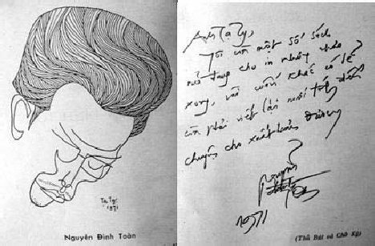

Sinh ngày 19/11/1930 tại Bồ Đề, Gia Lâm, Bắc Việt. Viết văn từ năm 1954.

Nguyễn Đình Toàn và thủ bút.
Tác phẩm:
1. Chị em Hải, nhà xuất bản Tự Do, 1962
2. Những kẻ đứng bên lề, nhà xuất bản Giao Điểm, 1964
3. Con đường, nhà xuất bản Giao Điểm, 1967
4. Ngày tháng, nhà xuất bản An Tiêm, 1968
5. Phía ngoài, nhà xuất bản Hồng Đức, 1969
6. Giờ ra chơi, nhà xuất bản Khai Phóng, 1970
7. Đêm hè, nhà xuất bản Hiện Đại 1970
8. Đêm lãng quên, Văn Uyển, 1970
9. Không một ai, nhà xuất bản Hiện Đại, 1971
10. Đám cháy, Văn Uyển 1971
Đã cộng tác với: Văn, Tự Do, Văn Học, v.v.
Nguyễn Đình Toàn và nỗi buồn trước mặt
Thấm thoát đã 17 năm rồi đó. 17 năm đi qua trong lòng con người"thiên lý tương tư" như một khoảng thời gian đầy dẫy buồn phiền. Từng năm, từng tháng nào có nghĩa gì so với nhịp luân hành vũ trụ, mà sao trong đáy sâu tiềm thức, trong hố thẳm nhớ thương, vẫn hiện lên bao nỗi giày vò gần như thê thảm. 17 mùa Xuân đất Bắc đã qua đi. 17 mùa Hạ cũng tàn phai theo từng trận gió Lào hầm hập. 17 mùa Thu chết rụi theo xác lá rơi ngổn ngang trên khắp nẻo đường Hà Nội và 17 mùa Đông với mưa phùn gió bấc thổi buốt ruột gan cũng phai nhoà trong tâm tưởng qua 17 mùa mưa nắng. Lòng người miền Bắc chợt úa héo mỗi lần nghĩ tới.
Nguyễn Đình Toàn sinh ra và lớn lên bên kia bờ Hồng Hà, huyện Gia Lâm nối liền với Hà Nội bằng nhịp cầu Long Biên vươn dài ngang dòng nước đỏ máu phù sa. Chỉ cách một cây cầu mà nếp sinh hoạt khác hẳn. Huyện Gia Lâm, có phi trường dân sự, có thôn xóm, luỹ tre bụi chuối, có bờ đê cao ngất xanh om cầu kỳ, mỗi năm một lần mở hội vào tháng Tám Âm lịch và một thị trấn chạy dài từ dốc cầu tới gần lối rẽ vào phi trường là hết. Đứng bên bờ đê Gia Lâm, có thể nhìn thấy lề Hà Nội với chiếc cột đồng hồ, Bảo tàng viện và cửa ô Yên Phụ.
Nhưng khi nhớ về miền Bắc, Nguyễn Đình Toàn chỉ nói tới Hà Nội, với tất cả mê đắm qua lớp lớp nhớ thương. Hà Nội là trung tâm miền Bắc, ở đó, mọi sinh hoạt được nâng lên hay hạ xuống đều có giá trị quyết định. Toàn, nhớ phố hàng Ngang, hàng Đào, nhớ con đường tàu điện với tiếng chuông leng keng buồn bã, nhớ chợ Đồng Xuân, nhớ nhà Thủy Tạ, nhớ cầu Thê Húc, nhớ đền Ngọc Sơn, nhớ tháp Rùa, nhớ cả hàng dương liễu xõa tóc xuống hồ Gươm soi bóng! Nguyễn Đình Toàn nhớ, nhớ nhiều lắm, nào thành phố, nào người tình bé bỏng, nhưng cái nhớ ở đây thuộc về ký ức, nên nó được phác họa qua tâm tưởng bằng những hình dung mê cảm nhất.
Người làm văn nghệ bao giờ cũng đa sự, họ có biết chăng, nỗi nhớ thương một khi đã bày tỏ được, coi như hết, không còn thuộc về mình nữa. Một món nợ đã trả xong, một chia lìa vừa dứt khoát! Cái đau ở chỗ đó. Nhưng may mắn thay, sự nghiệp văn học của Nguyễn Đình Toàn không nằm ở môi trường ấy. Nó được hình thành trong vùng trời khác, nơi mà định mệnh và tình yêu đang chụp bắt, đang bủa vây, đang khép những bất ngờ và khổ não cho mỗi tuổi trẻ.
Tuổi trẻ, tình yêu, hai vấn đề lớn nhất đối với Nguyễn Đình Toàn. Nhà văn luôn luôn vì nó, nhân danh chúng để tỏ bày thái độ trước cuộc sống. Nguyễn Đình Toàn mở đầu nghiệp văn của mình bằng tác phẩm Chị em Hải, đăng từng kỳ trong nhận báo Tự Do và cũng do cơ sở này xuất bản. Tác phẩm ra đời, đưa ngay nhà văn vô hẳn khung trời văn nghệ và được dư luận liệt vào thế hệ đợt sóng mới của văn chương Việt Nam. Điều này, đúng hay sai, thiết tưởng, không phải điều hệ trọng, vì giá trị của nhà văn và chiều hướng sáng tác của họ không nằm trong chu vi một tác phẩm, nhất là tác phẩm đầu tay. Nếu bây giờ đọc lại, tác giả chắc đã nhận thấy rõ hơn ai hết điều đó!
Nguyễn Đình Toàn, nhà văn buồn bã và bệnh hoạn. Cái cuộc đời này, ngay cả trái đất nữa, tự cổ, vẫn chứa chấp trọn vẹn những vấn đề thông thường, trong nếp sinh hoạt chung, chỉ có khác, hình thức luôn luôn đổi thay theo tiến hoá, nhưng nội dung vẫn tóm gọn trong một số từ ngữ: sống chết, ăn ở, chủ quyền, thịnh vượng, tự do, công bằng, bác ái, tín ngưỡng, tôn giáo, v.v. Mọi quy luật đấu tranh đều xoay quanh mấy chữ trên, nhưng nó biến hoá khôn lường, làm cho mỗi từ ngữ biến chất và lý-tưởng-hoá nó tuỳ theo cứu cánh. Cũng như bốn chữ: Sinh, Bệnh, Lão, Tử, ấn định chu kỳ cho mỗi kiếp sống tạm bợ này.
Nguyễn Đình Toàn mang tuổi trẻ đi vào tình yêu, như kẻ hành hương gian nan đi tìm thánh địa trong tâm tưởng. Mỗi nhân vật được nhà văn dùng tới hình như đã mang sẵn một bản án, một quyết định nên mọi diễn trình của nhân vật đều ôm theo nỗi bi đát của định mệnh. Hình ảnh cô liêu làm băng hoại suy nghĩ. Mỗi nhân vật dưới nét mực Nguyễn Đình Toàn được đẩy vào con đường không định sẵn hướng đi. Mỗi số phận cứ lần từng bước trong vũng tối của tâm linh và trở thành mù loà trước ám ảnh, dục vọng! Từng bước của nhân vật như đi vào miền lưu đày vĩnh viễn. Nó nguy hiểm như trò chơi đu bay và ghê rợn như bước trên sợi dây tử thần treo chênh vênh ngang miệng vực thẳm. Người đọc nhìn rõ chúng qua toàn bộ tác phẩm của Nguyễn Đình Toàn. Nó liễm kết ở mỗi dòng, mỗi chữ. Nó vướng nghẹn giữa vượt thoát và cản ngăn, như một dòng nước chỉ dâng cao đến mép bờ mà không cách nào tràn qua, đành phải xuôi theo chiều nghiêng để quăng mình vào nơi thấp nhất.
Tác phẩm Con đường, ghi nhận lại nỗi u uất và đớn đau của thân phận đàn bà. Nội dung cuốn sách nêu lên những dữ kiện phi lý (không phải cái phi lý của Camus) do cuộc sống đẩy tới và con người chấp nhận một cách vô ý thức. Vóc dáng người con gái không may mang vết chàm trên mặt lại còn bị bủa vây bởi một hoàn cảnh khốn khó, nên tự giải toả bằng liều lĩnh của bản năng. Niềm tin đã chết rồi! Cuộc sống và hạnh phúc là hai điều thất bại ở tận đáy thẳm của lương tri, còn gì để đắn đo, trả giá? Nhân vật xưng tôi trong tác phẩm, phải chăng là niềm ăn năn của một tín đồ ngoan đạo giữa khung trời thánh thiện mà nhà văn hằng mơ ước? Cuộc đời đối với nhà văn, không phải là khoảnh khắc, là giai đoạn sống của một nhân vật ở trong kích thước của nó, nhưng đích thực, nó lê thê, ẩm ướt trong mỗi ô vuông hiện diện. Thân phận đứa con gái mồ côi cha, mẹ bỏ đi lấy chồng đã là điều bất hạnh, trời còn bắt tội mang tật, hỏi làm sao đủ can đảm để sống? Bởi vậy, người con gái đó có quyền thi hành những gì mình muốn, hoặc do định mệnh an bài. Nguyễn Đình Toàn, nhà văn tình cảm, bởi thế, những sự tình nêu ra hay được giải quyết đều thuộc tình cảm. Nếu đôi khi có sự tham dự của lý trí, cũng rất mờ nhạt, nó chỉ được dùng khi thực sự cần thiết. Chính vì muốn dùng cảm nghĩ để chuyên chở hành động nên phần độc thoại nội tâm bao giờ cũng lấn lướt, nhà văn coi nó như động lực căn bản để dàn trải, mở, thắt sự tình,
… Từ ngày tự biết mình là một kẻ tật nguyền thì thế giới của tôi thu hẹp trên cái bao lơn này. Không phải tôi không còn tiếp xúc với ai trong nhà hay người ngoài, cũng không phải tôi không còn bước chân xuống phố nữa, những lúc ấy tôi cử động, sinh hoạt như sắm một vai kịch tôi không phải là tôi. Chỉ có những lúc ngồi đây, trên cái bao lơn này, với bóng tối vây quanh, tôi mới thật là tôi, được tự do dự phóng. Và từ đó phải chịu nhận một khoảng cách với mọi người.
Làm thế nào khi mình là kẻ tật nguyền, bất bình thường? Bước ra khỏi thế giới của tôi, tôi bị quan sát chớ không được nhìn ngắm. Có lẽ tôi quá bi quan về sự bất thường của mình, nhưng làm thế nào được, tôi không đè nén cũng không giấu được sự ấy…
Đoạn văn trên là những dòng đầu của tác phẩm Con đường (1967) mở ra trước mắt người đọc một phần số đã bị định đoạt. Người con gái trời bắt xấu là sự cực nhọc ghê gớm, là một hình phạt chung thân, là một huỷ hoại vô bờ bến, do đó, những sự tình nào xảy đến, dù đến bằng vòng tay ân ái của kẻ tình nhân, hay đến bằng đớn đau cũng chỉ là để thực thi một hình phạt! Con người ở hoàn cảnh này quả là tai họa của chính mình.
Người con gái ở với gia đình bên nội. Trong chuyến đi thăm mẹ dưới tỉnh để tìm về cho lòng mình chút tình thương. Biết rằng không phải là khách của mẹ, nhưng căn nhà của mẹ ở bây giờ, không phải nhà mình vì ngoài mẹ còn có cha dượng và các em khác bố. Đã mười năm qua rồi, hình ảnh mẹ còn in đậm trong thân thể, trong vóc dáng, trong ngôn ngữ cô gái, mọi người đều nói thế. Mẹ là biểu tượng cho ô nhục, mẹ đã ngoại tình lúc bố còn sống, mẹ đi lấy chồng khi bố vừa chết! Mẹ đã cách xa từ năm lên 7, bây giờ cô gái 17 rồi đó! Người con gái ở với mẹ 3 ngày rồi trở về. Bà mẹ đưa con ra bến xe, lúc xe sắp khởi hành, bà đứng bên này đường vẫy con và khóc. Đứa con gái chợt nhận ra, 10 năm trước, mẹ cũng đã đi xe xuống miệt này, bây giờ, 10 năm sau con cũng xuống đây, nhưng con về, mẹ ở lại,
… Đời con từ lúc ba chết, mẹ bỏ đi có lúc nào là lúc nên cười? Con gọi mẹ là hạnh phúc của con. Mẹ đứng bên kia đường, mẹ cách con một con đường…
Ý nghĩ như một vết chém. Nó làm rã rời hy vọng và từ đó, mỗi con người thuộc về một phía, dù cho là mẹ con. Cái con đường mỗi số phận phải kinh qua, nhiều khi là con đường quen thuộc. Nó chẳng xa lạ gì đối với mỗi người, nhưng mỗi người lại có cảm tưởng như nó khác biệt hẳn với ý hướng của đời mình. Chính vì nó đã quá cũ và nhàm chán nên làm mọi người quên, nhưng đích thực con-đường-cuộc-sống là một-cái-gì-không-hàn-gắn-nổi, không-vượt-qua-nổi, cũng không-cải-tạo-nổi, nó là định mệnh.
Trên con đường trở về, chẳng may cô gái bị cảm, ngẫu nhiên gặp "chàng" trên chuyến xe, "chàng" đã săn sóc, giúp đỡ! Xe kẹt phà, chàng mời cô gái vào quán uống nước. Cô gái bị cảm nặng muốn ngất xỉu. Trong lúc choáng váng cô gái cảm thấy được nâng đỡ rồi thiếp đi… Đêm hôm đó, cô gái ngủ ở căn nhà xa lạ với "chàng". Sáng hôm sau tỉnh dậy, cô gái biết mình đã trở thành đàn bà sau một giấc ngủ. "Chàng", một quân nhân hào hoa, đến thăm em gái có chồng vừa chết vì trận công đồn, đã cho cô gái sự khoái cảm thứ nhất của tình dục, mãi mãi chỉ là gã đàn ông vô danh!…
Bi kịch ở chỗ đó. Nghịch cảnh trần gian đã dồn cô gái vào con đường không lối thoát. Cơn đau, nỗi buồn như bám chặt lấy một số phận bi đát rồi đẩy sau vào cuộc sống cũng bi đát không kém. Nguyễn Đình Toàn viết như kể lể, như thầm thì nói chuyện. Người đọc có cảm giác "ghe" chứ không đọc, do đó, văn Nguyễn Đình Toàn thấm vào lòng người như mưa phùn rỉ rả thấm dần vào lòng đất. Nhân vật trong truyện có vẻ chấp nhận những gì do cuộc sống đẩy tới, không phản kháng hoặc phẫn nộ, chỉ nhỏ nhẹ trình bày.
Thời gian qua mau, nhưng những gì xảy ra trong đêm ngủ lại dọc đường vẫn làm nàng bàng hoàng, sung sướng,
… Nhưng tự phần sâu kín nhất của đứa con gái là tôi, tôi vẫn nuôi dưỡng những cảm giác bàng hoàng, đau đớn, sung sướng đó như kỷ niệm quý báu… khắp người tôi mọc lên sự tủi nhục, quấn quít tựa chìm trong một mớ rong, dưới mặt nước của sự khoái cảm lần đầu trong đời. Tôi không còn là tôi nữa. Chỉ còn là một sự ân hận tình nguyện vỡ ra cùng với nước mắt ùa chảy khi cơn lửa đã thổi ngọn cuối cùng…
… Tôi hư hỏng đến độ yêu quý cái kỷ niệm xấu xa đó như một vật báu chăng? Đó là niềm ăn năn hạnh phúc của tôi? Một thứ hạnh phúc bất hạnh, giống như mẹ phải không?…
(Con đường, trang 26)
Chao ôi! Thứ hạnh phúc bất hạnh mà Kafka đã kêu lên, đã gào thét trong tác phẩm của ông làm lay động cả lương tri thế giới, ai ngờ nó lại vẫn có mặt trong kích thước Nguyễn Đình Toàn hôm nay. Con người giống như một hình nhân giữa cuộc sống. Nó được cuộc sống sơn phết và ngụy trang rồi dẫn lộ vào đấu trường, để mặc cho may rủi định đoạt. Sự bất lực trong mọi đối kháng, mọi hoàn cảnh đôi khi làm con người trở nên ngu xuẩn. Cô gái vì không chịu nổi hoàn cảnh với ám cảnh ô nhục của người mẹ nên cố tìm cho mình con đường để vượt thoát. Con gái xin đi làm xa. Chỉ có ông nội còn chút thương xót nàng, nhưng ông nội già rồi, nên phải chiều theo ý muốn của những người đang phụng dưỡng những ngày tàn của đời ông. Dù nhớ, dù thương, dù đau khổ mà vẫn phải dứt bỏ nơi mình đã có mặt 21 năm trời, vì nó đã ung thối và bị bủa vây bởi thù hằn, ghét bỏ!
Chiếc xe đưa nàng lên Cao nguyên. Trong chuyến xe, một gã đàn ông đứng tuổi lại hiện ra dưới nhãn hiệu nghệ sĩ,
… Đầu người đàn ông nghiêng qua một bên, hình như nhìn thấy hết mặt tôi và qua một mái tóc ông ta, tôi nhìn thấy một nửa mặt mang dấu vết tàn tật của tôi. Tôi có cảm tưởng bị cháy nốt nửa mặt còn lại bởi sự hiện hình đột ngột đó. Và tôi không biết làm sao hơn là nhắm mắt lại trong một cử chỉ chịu thua hoàn toàn…
(Con đường, trang 31)
Nhà văn hình như đã ước tính từng bước đi cho nhân vật do mình cấu tạo, nên mỗi sự tình đều được mở sẵn để đón chờ diễn tiến. Khuôn mặt người đàn ông đến với cô gái vẫn là khuôn mặt vô danh. Nó không mang tên riêng, chỉ được dùng như biểu tượng để ấn định mức độ hành động của nhân vật trong kỹ thuật viết mới. Thực ra,"ông viết kịch" có tên, cô gái biết vì đã đọc kịch do ông sáng tác, nhưng không nói ra. Nhà văn cố tình giấu để đồng hoá nó với những vô danh khác,
… Tôi cười nói với ông:
"Thì ra tôi vẫn đọc kịch của ông mà không ngờ lại gặp ông lúc này".
Ông ta nói:
"Cô nhớ được tên tôi sao?"
Tôi bảo:
"Không những thế, tôi còn có thể nói đúng một lời như nhân vật của ông nữa".
Ông cười nhìn tôi:
"Tôi không nhớ gì về họ".
"Ông muốn làm thế để họ phải phục tùng ông sao?"
Ông ngồi xuống bên cạnh tôi. Mùi thuốc lá thơm đầy trên áo ông…
(Con đường, trang 37)
Tấm màn đã kéo sang hai bên để lộ khoảng đất trình diễn. Nhà văn đã sử dụng thị xã Đà Lạt với phong cảnh và bài trí thiên nhiên miền Cao nguyên ở đằng sau và đằng trước làm điểm tựa cho các nhân vật. Lên Đà Lạt làm việc, cô gái ở chung nhà với một bà cùng sở đã bỏ đến hai đời chồng nên bị gia đình từ. Người đàn bà đó sống nhiều, đã trải qua bao cơn sóng gió, đã già dặn. Còn cô gái, ngoài một đêm ân ái ngẫu nhiên, vẫn nhìn đời qua tấm lăng kính tình yêu đôn hậu.
Rồi tất cả họ quen nhau, ông viết kịch, bà ở chung nhà và cô gái. Mỗi người, mang tâm sự riêng. Họ chờ dịp để thực thi ý định. Ông viết kịch là cáo già, bà ở chung là sói cái, còn cô gái là con chồn đèn ngơ ngác đứng nhìn trời đất với vui thú hồn nhiên.
Ông viết kịch dương cái bẫy lớn. Ông muốn một lúc đánh ngã cả hai con mồi, nên ông rất khôn ngoan về vấn đề giao tế và tế nhị trong ngôn ngữ đối với mỗi người. Ông nói với cô gái: "Người ta sống để chia đều may mắn và bất hạnh cũng như bất hạnh và may mắn có ngay cùng với thân thể người ta rồi", với ngụ ý sâu xa. Tiếc thay, cô gái chưa đến tuổi để hiểu ẩn dụ của ngôn từ! Ông cũng dùng ẩn ngữ để nói với bà ở chung, khi bà này kể chuyện về người chồng cũ: "Anh ấy là một đứa trẻ tuyệt diệu!" Ông viết kịch bảo: "Một đứa trẻ thì dùng được việc gì?" Câu chuyện xoay quanh những lời đối thoại xa xôi, bóng bẩy. Mỗi lời nói như một nút thắt, như một bước chân tiến gần đến mục tiêu. Trong khi đó, cô gái đã nhìn thấy cái gì mình mới-khám-phá-ra sắp vuột khỏi tầm tay,
… Tôi muốn, nhưng sợ, nhưng muốn hết sức, chạy theo ông giữ ông lại. Để làm gì? Tôi không biết và vì không biết nên tôi càng hoảng hốt. Có một cái gì đã hỏng, đã mất giữa chúng tôi? Không, đó là mày tưởng tượng ra đó, nhỏ. Bà bạn mở cửa vào nhà, bật đèn sáng. Tôi còn đứng ở ngoài nhìn theo bóng ông khách đi mãi về phía xa, qua một chiếc cột đèn và sắp qua một chiếc cột đèn khác…
(Con đường, trang 65)
Cái nhìn đây là cái nhìn thất bại, cái nhìn muộn màng trong tâm thức nhà văn. Cái nhìn không phiêu phiêu bay bổng mà nó cắm mốc im sững trong trí não như một mũi nhọn lút sâu vào xương tuỷ. Nhà văn còn đưa ra vấn đề phi luân, khi bà ở chung nói về luyến ái và muốn được tự do giải quyết sinh lý với giống đực, trước cô gái. Cái sự tình này như lời lăng nhục vào xã hội nhưng nhiều khi, nó là sự thực! Còn ông viết kịch lẽ dĩ nhiên, phải quan niệm cuộc đời theo đúng ý muốn của ông, vì có lợi,
… Cuộc đời như một vở kịch người ta cố dàn xếp để cho nó phải xảy ra như thế, nhưng người ta cũng có thể dàn xếp cho nó xảy ra khác hẳn thế, hay không liên quan gì đến thế cũng được…
(Con đường, trang 17)
Cô gái không là kịch sĩ, nhưng vô tình vẫn phải tham dự vào màn-kịch-cuộc-đời, nghĩa là nàng phải ra vào, đi đứng, nói cười theo tâm trạng vai trò thực của nàng. Ông viết kịch và bà ở chung đã "đóng" trọn vẹn cái vai trò của họ trên bề mặt chiếc giường, còn cô gái bất hạnh kia vẫn giữ một vai nạn nhân, phải chứng kiến những gì không-thuộc-về-mình, nhưng vẫn-bắt-mình-đau-khổ. Nàng cảm thấy, như bị ai đánh vào tự ái. Nàng run rẩy đi tìm cho mình một sức lực để chiến thắng. Tiếng nước xối trong phòng tắm của bà ở chung đi khuya về, làm tâm hồn cô gái nhức buốt. Lòng dục phát động cùng với hờn ghen số phận. Cơn tuyệt vọng đã làm nàng choáng váng. Sự bấu víu vào tình yêu tinh thần chỉ là ngỡ ngàng và ngu ngốc! Cô gái chợt nghĩ đến mẹ, đến sự thôi thúc của tình dục. Có lẽ, trong cơn bối rối như thế này, ngày trước mẹ mình đã ngoại tình chăng? Những sợi thần kinh chùng xuống. Một vùng tủi nhục vừa mở ra trước mặt,
… Những người lớn tuổi như bà thường tự cho mình cái quyền nói đến những cái gì mà những người còn trẻ không muốn nói, và tự cho đó là những kinh nghiệm khôn ngoan của mình, thật ra thì đó chỉ là sự dạn dày.
Bà tiếp:
"Bây giờ nếu tôi nói, tôi đã ngủ với ông ấy, điều đó có liên quan gì đến em không?" Đó là câu hỏi quả thật tôi không ngờ bà cũng dám nói ra. Tôi như bị một nhát búa vào giữa đỉnh đầu… Câu nói đó chọc vỡ sự tức giận đang mưng mủ trong lòng tôi, cũng là một thứ tiếng nói từ bé tôi không tưởng tượng sẽ có lúc mình phải nghe và tham dự vào câu chuyện…
(Con đường, trang 85-86)
Thế rồi vì tự ái (chao ôi! Tự ái) của tuổi trẻ đưa cô gái đến quyết định, phải giành về phần mình những thứ gì mình có quyền hưởng. Ông viết kịch, kiêm đạo diễn tài ba, đã nắm gọn con mồi và nhai nuốt ngon lành! Một con vì dạn dày nên coi thường nguy hiểm, một con ngây thơ nhưng mang nhiều dục vọng,
… Ôi đêm như một thứ lửa đen đốt trên da thịt tôi một niềm đau đớn, kiêu hãnh, mù loà. Vâng, tôi sung sướng, kiêu hãnh vì tôi đã được sống như những người khác, dù sự sống ấy được giấu trong bóng đen của tăm tối. Da thịt tôi đã được sống đời sống của nó, mà tự bao giờ, tự thuở tôi lớn lên, tôi đã bất lực đối với nó. Tôi muốn chiều chuộng nó cho đầy một lần. Khuôn mặt tàn tật nào hãy cứ để cho nước mắt chảy tuôn.
Tôi thả mình cho cơn sóng mềm bò từ đầu ngón chân lên những sợi tóc rũ…
(Con đường, trang 99)
Người con gái mất trinh tiết, đã liều lĩnh vì mặc cảm và coi sự chung hưởng xác thịt với gã đàn ông đáng tuổi cha chú mình là một vinh dự! Đã thú thật sự vui sướng của mình không còn che đậy. Cái thân xác kia và nguồn đam mê nhục thể có phải chăng là ý muốn cuối cùng của đời con gái? Không. Nhất định nó không phải là mẫu số chung cho xã hội, cho những người trẻ tuổi hôm nay. Alberto Moravia, nhà văn Ý, thường viết về dục tính với những đoạn văn thật sống sượng, khích động, nhưng đích thực ở chiều sâu của những đoạn văn đó, nó hàm chứa kín đáo với ngụ ý khuyến dụ: tất cả những thứ ấy chẳng có giá trị gì đâu, nó chỉ là sự bộc phát quá độ, trong cuộc sống quá độ, hưởng thụ quá độ, rồi sẽ chẳng còn gì khi nó đã bị lột truồng! Tình dục, vấn đề có sẵn, hà tất con người phải vì nó mà khổ đau! Vô ích, mọi suy nghĩ đều vô ích vì trước sau gì nó cũng đến và phải đến, như sự sống, sự chết là một dàn xếp gọn gàng.
Sự trở về thăm gia đình của cô gái trong dịp Tết, nhà văn viết ra, có lẽ chỉ nhằm đưa sự tình vào môi trường khác, nó là màn hai của buổi kịch dở dang, luôn luôn dở dang vì mỗi số phận có đấy, còn đấy, họ vẫn phải chụp bắt, vẫn phải khốn đốn trong tâm thức Nguyễn Đình Toàn. Người ta đặt câu hỏi: Nhà văn đã sáng tác để làm đẹp hay dùng sáng tác để nguyền rủa cuộc đời? Thân phận cô gái phải chăng là biểu tượng cố định cho mỗi số kiếp? Nó là hạnh phúc hay sự lường gạt? Nó là sung sướng hay khổ đau? Và con-đường-cuộc-đời có phải chỉ dẫn đến thê thảm? Tất cả những băn khoăn đó nằm trong cõi siêu hình, chắc chắn nhà văn cũng chỉ là kẻ tìm đường. Khi viết, có lẽ tác giả đã nghĩ quá nhiều đến sự bất lực của con người, vì con người, kẻ thất bại trong cố gắng qua vóc dáng Lão ông và biển cả (The Old Man and the Sea) của Hemingway chăng? Sự đưa cô gái lên kích thước hí viện ngày mồng một Tết để độc diễn cũng chỉ đủ chứng minh cho sự mất thăng bằng trí não,
… Ánh đèn làm lóe mắt, tôi cảm thấy mệt thật sự, cái mệt của thân xác sau cơn dục tình, tôi nhìn xuống sàn gỗ dưới chân, hai mũi giầy của mình lấm bụi, ánh sáng vẽ một vòng tròn gẫy một nửa trên cánh gà bằng vải xám, một nửa dưới sân khấu, tôi muốn ngồi xuống, muốn nằm xuống đấy, như nằm xuống chiều sâu của một lỗ huyệt…
(Con đường, trang 173)
Rồi cô gái nằm xuống thực, nằm xuống trong khoái cảm tê mê với ông viết kịch, trong khi có bổn phận đi tìm lối thoát cho số phận khác: hỏi chỗ phá thai cho ba cô chửa hoang!
Sự trở lại con đường cũ, con đường đã đưa mẹ mình vĩnh viễn xa mình, đã ngẫu nhiên cho mình giây phút rúng động thứ nhất của đời con gái, lúc này hình như xa lạ ngay cả với mình. Điều này phải chăng là một hồi tưởng thê thảm, phải chăng là con-đường-định-mệnh mà mỗi số kiếp phải lần theo cho hết gian truân?…
Nguyễn Đình Toàn thường đưa ra trong tác phẩm những nghịch cảnh. Đi từ nghịch cảnh đó, con người chỉ tìm thấy thất bại! Cái con-đường-cuộc-sống không ai có thể định sẵn được lộ trình, nhưng vẫn phải di hành trên đó với hai mắt mù loà, đôi tay quờ quạng và đôi chân dò dẫm. Cái bi thảm của thân phận là chỗ đó! Nguyễn Đình Toàn, nhà văn luôn luôn khao khát hạnh phúc, nhưng tâm hồn lại trôi giạt vào vùng trời bất hạnh, ở đấy, hạnh phúc chỉ là phiền muộn! Con người đã biến thành trò chơi của Tạo hóa, nó bị lưu đày vào từng hố thẳm của ưu tư và bất lợi cho số mệnh an bài. Không một tác phẩm nào của Nguyễn Đình Toàn mở ra với ánh sáng, hầu như bao giờ nó cũng khỏa lấp vào u tối của oan trái, khắc nghiệt! Trong Con đường, Nguyễn Đình Toàn bắt mỗi nhân vật phải chấp nhận định mệnh và nỗi bi đát của nó. Trong Ngày tháng nhà văn cũng đưa người đọc vào chung chủ đề: Sự an bài của Thượng đế và sự bất lực của con người trước bạo cảnh trần gian.
Đối với Nguyễn Đình Toàn, hình như mỗi con người đều mang sự chán mỏi thường trực giữa cuộc sống. Từng trạng huống xảy ra, con người chỉ đứng ngó, muốn kinh qua lại sợ vấp ngã, đành liều nhắm mắt mặc cho dòng sông đẩy đưa. Mỗi nhân vật như được treo lơ lửng giữa vòm trời u tối rồi run rẩy, trồi lên, trụt xuống theo ý muốn nhà văn.
Người đàn bà trong Ngày tháng như một bùng nhùng, một hy vọng bắt đầu tàn lụi và người đàn ông đối với nàng cũng chỉ có giá trị như một kềm hãm, một "cho phép" trong lề lối sinh hoạt thường nhật kể cả chuyện làm ái tình. Vinh, được tượng trưng bằng cây đèn xanh đỏ ở mỗi ngã tư đường. Vì thân phận người đàn bà 30 tuổi, goá chồng, sống một mình thảm lắm! Nó ngắc ngoải, chiều không ra chiều, đêm không ra đêm và tự sờ mó thân thể mình là điều nhục nhã, tự làm ung thối mình,
… Khi Vinh hôn tôi cái hôn đầu tiên, tôi nghĩ, cuộc hỏa hoạn đã được dập tắt, tôi bắt đầu phải thở hết thán khí ra khỏi ngực. Mấy ngón tay Vinh thơm mùi vỏ chanh. Mùi thơm ấy báo hiệu rằng tôi phải làm người làm vườn trở lại. Phải trồng trọt lại những tình cảm của mình. Trên mảnh đất tôi không nhìn rõ mặt. Trên mảnh đất đã khóc than và đã chôn chặt quãng đời của mình…
(Ngày tháng, trang 11)
Thú nhận để chứng minh sự sòng phẳng. Hà, người đàn bà đam mê trong khốn khổ, là tai hoạ của chính mình trong mỗi suy nghĩ cũng như hành động. Mối ám ảnh vóc dáng người chồng cũ vẫn làm khổ nàng không ít. Một bộ đồ bay nhiều túi, một dáng dấp mến yêu, một phi trường với những tiếng động và một chuyến bay không bao giờ trở lại! Một thành phố miền biển với cát trắng và màu nước xanh trong nhìn suốt đáy. Những phiến mây giang hồ nổi trôi xung quanh thân tàu bây giờ chỉ còn là kỷ niệm! Cái vùng trời kỷ niệm đó như những chứng tích khổ đau. Nàng không muốn nhìn, không muốn nghĩ tới nữa.
Hà gặp Vinh, chàng phóng viên chiến tranh làm việc cho một hãng thông tấn ngoại quốc qua sự giới thiệu của người bạn. Thế là vùng mơ ước mở ra xoá nhoà dĩ vãng. Nàng cần một người đàn ông bên cạnh là đủ. Cô đơn là cái gì tủi nhục cho số kiếp đàn bà,
… Tôi không thể chịu nổi nữa cái cảnh nói không ai nghe tiếng mình, có lẽ tất cả những người đàn bà không có ai yêu, hay người yêu đã chết đều hiểu rõ điều này dù tôi biết, tôi hiểu rằng, những điều tôi nói ra không có gì đáng nói, nhưng ý nghĩa của nó là được nói với người khác không phải nói một mình…
(Ngày tháng, trang 24-25)
Con người sợ cô đơn, luôn luôn lẩn tránh cô đơn bằng cách dấn thân vào cuộc-đời-kẻ-khác. Cũng vì quá sợ hãi cô đơn, nên cô đơn lúc nào cũng ngấp nghé, chập chờn để gây bao ấn tượng hãi hùng. Cái chiều sâu thăm thẳm, hun hút của không gian, cái chiều dài lê thê của thời gian và cái mỏng manh của kiếp người đã tạo nên chua chát và làm chùng giản nghị lực chống đỡ trước áp lực nặng nề của tâm cảm. Con người chưa hẳn đã chết vì phiền muộn nhưng cái bi thảm là phải kéo lê một dòng sống không thuộc về mình!… Miếng cơm nào, manh áo nào và mảnh hồng nhan nữa có phải đâu chỉ để mình tự ngắm? Bao Tự có đẹp nhờ U Vương, Dương Quý Phi có đẹp nhờ Đường Minh Hoàng và thơ Lý Bạch tán tụng, Điêu Thuyền có đẹp nhờ mắt xanh Lã Bố, Tây Thi có đẹp cũng nhờ Phạm Lãi hào hoa, nên sự tủi thân của Hà đã biến thành tù ngục! Còn gì khổ hơn, bữa ăn chẳng ra bữa ăn, nhà chẳng ra nhà, chồng chẳng ra chồng, đời chẳng ra đời!… Ngay cả cái cao ốc, Hà đang góp mặt, nó cũng chứa chấp trọn vẹn những dơ dáy, ti tiện và mỗi số phận như bị giam hãm trong một chu vi hạn chế. Hà tự giam, mọi người tự giam với bi kịch tiếp diễn liên hồi. Hà như bị lôi cuốn vào cơn hôn mê của dục vọng. Ảo tưởng đã lấn át thực tế và chỉ để cho nàng một kẽ hở nhỏ le lói tia sáng mờ nhạt bên ngoài. Dục tình đã đẩy nàng vào một vùng sương khói đam mê. Vui và buồn là hai dấu hiệu duy nhất thay nhau chiếm cứ đỉnh cao suy nghĩ, đến nỗi Hà không phân biệt phần nào của mình, phần nào do ảo tưởng đời sống đưa lại,
… Mọi xúc cảm, ý nghĩ trong tôi bây giờ cũng đã tắt cùng ngọn đèn mơ tưởng nào. Tôi nhìn xuống da thịt mình trắng rợn trong đêm, ánh sáng đã thoát ra, hay đó chính là cái ánh sáng gọi là đời sống? Đời sống có từ thân thể của chính mình hay là những người ngôi lê trong mấy cái quán cóc…
… Tưởng tượng mạnh và rõ ràng đến nỗi có nhiều khi đã làm tôi hoảng sợ. Những lúc đó tôi muốn chết, cái chết nhẹ nhàng như tiếng chết tôi muốn la lên một mình, nhưng nó nhỏ lí nhí, lúng búng trong cổ họng, tôi trở dậy đóng cửa sổ hay mở ra làm một cử chỉ gì đó, kiếm một viên thuốc uống, đi lại trong phòng và chính lúc đó, tôi lại nhìn thấy tôi nằm trằn trọc trên giường. Dĩ nhiên đó chỉ là ảo tưởng…
(Ngày tháng, trang 46-47)
Ảo tưởng đã du con người vượt thoát thực tại, đồng thời đẩy con người vào thất vọng khi vụt tỉnh. Vinh đó, nhưng chàng không thể nào gần Hà, vì tình yêu chỉ là một phần của đời sống. Ngoài tình yêu, mỗi người đều có nhiệm vụ riêng, trách nhiệm riêng về đời mình. Đi vào tình yêu là đi vào miền lưu đày không giới hạn. Biết thế mà Hà vẫn trầm lặng cam chịu bằng cách chối bỏ lời xin của người bạn Mỹ, tuy khác nòi giống, nhưng yêu nàng tha thiết. Nàng là người đàn bà chung thủy chăng? Chưa chắc! Nàng là người Việt Nam nhiều tinh thần dân tộc chăng? Càng chưa chắc! Chỉ có điều không thể hồ nghi: Hà, kẻ bệnh hoạn! Nỗi buồn đã trở thành chứng bệnh, dù nhà văn đã tạo cho Hà một bức tường đạo lý tượng trưng. Nỗi buồn gậm nhấm làm mỏi mòn cuộc sống và bệnh nhân chỉ còn biết giao phó tính mệnh cho viên thầy thuốc. Vinh là viên thầy thuốc đó. Thay vì cho người yêu uống thuốc bệnh, chàng lại cho nàng uống toàn độc dược có đặc tính kích thích thần kinh,
… Sự vuốt ve nhẹ nhàng nuôi từng chút cảm giác cho lớn dần, rồi thoát ra như mạch nước, tôi giữ cứng thân thể không cho chuyển động, và trong một giây mặt mũi tôi bỗng tối sầm, trí óc và cảm giác tan lẫn vào hư không nhoà nhạt làm run rẩy hết chân tay nâng thân thể lên rất cao, rồi thả xuống, lắng chìm từng cơn, giữa ý thức bắt đầu thấy lại.
Vinh ngủ thiếp ngay trên người tôi, tôi phải dùng sức đẩy anh xuống bên cạnh, sự mệt nhọc và cáu kỉnh làm tôi muốn la lên thành tiếng, nhưng tôi đã nằm im, lửng lơ nằm như con vật chịu thua…
(Ngày tháng, trang 67-68)
Sự đam mê quá độ làm con người mất sáng suốt, hầu hết các nhân vật dưới ngòi bút Nguyễn Đình Toàn đều ở trạng thái bình thường do tình dục cấu tạo. Sự hốt hoảng và xa lạ ngay cả với mình không còn là điều vô lý nữa. Nó quay cuồng, chìm đắm trong cái vực thẳm nhục thể hầu như không cách gì vượt thoát. Cái hành lang thời gian của một kiếp người in đậm nỗi thảng thốt của những con mắt lờ đờ mỏi mệt, những ngất ngây nghiêng ngả, những rã rời câm tiếng! Khuôn mặt người con gái trốn nhà theo trai cùng sống trong vòng đai cao ốc này, đã vẽ vào cuộc đời một dấu than đậm nét. Hà cứ lăn lộn với ảo tưởng và chập chờn giữa tình yêu như bóng ma thơ thẩn dưới ánh trăng suông. Thêm một đau khổ nữa, Hà biết mình sẽ chẳng bao giờ có con vì một chứng bệnh thời con gái. Người đàn bà không sinh đẻ không phải đàn bà, dù Hà có biện minh cách nào đi nữa. Những hoàn cảnh bủa vây xung quanh Hà toàn thù nghịch. Nếu có phút giây nào thoả đáng, nó cũng mong manh quá đỗi. Tình yêu thì cay đắng như chất độc còn kiếp người thì buồn thảm, bơ vơ,
… Tôi nhìn xuống giường, nhìn xuống mặt vải trắng bên cạnh mình vừa bị xê đi, tôi có cảm tưởng như là tôi vừa xích người cho một người nào nằm xuống đó, cái chỗ vẫn còn đấy, và cảm tưởng này làm tôi ghê gai khắp cả người, tôi đã nằm chung giường với cái chết, có lẽ như thế, tôi đã nhìn thấy sự sống của tôi lìa khỏi mình, tôi đã nhìn thấy sự trống trải của đời mình, tôi đã nhìn thấy một dấu tích không còn dấu tích nào, tôi đã nằm với sự mất tăm của mình, một lần như thế, đôi ba lần như thế, là hết cuộc đời…
(Ngày tháng, trang 99-100)
Trong lúc thất vọng nhất, tự nhiên dĩ vãng quay về để, vừa an ủi vừa tách rời ảo tưởng và thực tế. Những lời nói ân tình, những dấu vết in hằn trong trí nhớ, những đam mê nguyên vẹn mùi hương và còn gì nữa đây? Có lẽ một vùng sa mù, một giọt sương mắc trên đầu lá!… Tưởng tượng là hình thức vừa thừa nhận vừa phủ nhận đời sống, cũng như chữ nghĩa là biểu thị đời sống đồng thời nó từ chối điều nó biểu thị. Văn Nguyễn Đình Toàn như độc dược, nó tàn phá mãnh liệt chẳng những trên chu vi cơ thể, còn làm mòn mỏi suy tư. Hà, con bệnh bị giày vò tàn nhẫn dưới uy quyền nhà văn. Chồng chết, bơ vơ trong ám ảnh, người tình luôn ở xa lại còn bị bắt vì đã chui xuống hầm tàu toan trốn đi ngoại quốc. Hà phải lo, phải khóc, phải vất vả trong việc nuôi kẻ ở tù. Sau cùng, vì may mắn, Hà vẫn được Vinh trong một thời gian ngắn nữa. Đây là một ân huệ chót nhà văn dành cho nhân vật,
… Vinh không nói gì, anh siết chặt tôi trên người, sự say đắm của Vinh làm tôi cảm động, anh hôn trên đó và anh đã cho tôi cảm tưởng nó là bông hoa của đời tôi, của đời chúng ta. Vinh muốn tôi tắm với anh, tôi gội đầu kỳ cọ cho anh, nước làm cho dục vọng được tưới mát, ướt đẫm, trời trong xanh nhìn thấy sau ô cửa nhỏ, những cành lá đan buồn với nhau…
… Mỗi tối chúng tôi đều uống, rượu làm cho tình ái trở nên gay gắt hơn và cũng vì thế quyến rũ hơn, một tuần lễ gần như tôi đã sống thường trực trong sự bàng hoàng, cơn bàng hoàng đã được dìm sâu trong cơ thể, khắp người tựa có hàng ngàn con sâu đất âm u thắp lên chất sáng, chứng mất ngủ đã được những cơn mệt mỏi làm cho thiếp đi, tôi đã ngủ những giấc ngủ của người chết, ý thức mỗi ngày một tan loãng, đôi lúc trở nên mù mịt…
(Ngày tháng, trang 119-120)
Ý thức về đời sống là một ý hướng được phát hiện trong lúc tỉnh táo nhất. Nó có mặt như lời cảnh cáo, như một dặn dò, khuyên nhủ. Nhưng ý thức là trừu tượng, nó nghĩ về đời sống chứ không phải đời sống nên nó cũng dễ dàng tan biến trong tâm trí một con người cố tình buông trôi thân phận. Cả da thịt cũng vậy, có khi là sông núi cản ngăn, có khi là giao thoa mù mịt!…
Nằm trong tay người tình vẫn ngửi thấy mùi thân thể với ngày tháng bùi ngùi có bóng đêm vây quanh và những giờ lẻ loi, cô độc. Đây đó, lập lờ hình ảnh của cái chết treo lửng lơ giữa hy vọng và tuyệt vọng, để cuối cùng vẫn là xa cách, vì Vinh bị gọi nhập ngũ. Hà sửa soạn tiễn người tình vào trại với ý tưởng khổ não. Nhưng nàng đâu có biết, trò chơi nào rồi cũng tàn và cuộc đời không biết cảm động!
Ở hai tác phẩm Con đường và Ngày tháng, Nguyễn Đình Toàn đều dùng nhân vật phái nữ giữ vai chính, và cả hai thân phận ấy, chẳng người nào được chút may mắn, có chăng chỉ là những khoảnh khắc đam mê tình dục rồi tắt lịm trong mỏi mệt rã rời. Trần gian sự thực có nhiều lạc thú nhưng sao, nhà văn chỉ chọn toàn những đắng cay, bi phẫn để bắt nhân vật do mình cấu tạo – xuyên qua cuộc đời – phải đắm chìm giữa cơn lốc nội tâm cuồng nộ? Và con đường ấy, ngày tháng ấy, sẽ dẫn con người đến đâu trong một xã hội đã băng hoại cả luân lý lẫn đạo đức? Có lẽ, vấn đề đó ở ngoài cương vị nhà văn.
Tác phẩm Không một ai (1971), nhân vật chính, một thanh niên đau yếu vì đã bị thương trong thời gian hành quân, về thành phố làm công việc mới. Sự hiện hữu của vết thương, chẳng những làm suy yếu thể chất, còn làm cho nghĩa sống giảm mất phần tốt đẹp của nó. Nhân vật xưng tôi, muốn thay đổi, muốn vứt bỏ hiện tại đớn đau, đó là ý nghĩ tốt, nhưng chỉ là ý nghĩ thôi, vì làm sao chàng ta có thể cải tạo được cuộc sống có đó, trong khi mình chỉ là cá nhân mang thương tích tàn phế? Không những thế, trong tâm sự, đang bị hành hạ bởi cuộc tình dang dở và một nhen nhúm bắt đầu. Nội dung tác phẩm tiết ra nỗi buồn thương lãng đãng với những sự kiện được nói tới qua bốn nhân vật: Chàng thanh niên bệnh hoạn, Ph., người đàn bà tình nhân, Trang đang khốn khổ và Kế, người đàn ông đứng tuổi còn nhiều đam mê. Cái trục xoay quanh vấn đề tình ái và cuối cùng chẳng còn lại gì ngoài sự đổ vỡ toàn diện. Lối dựng truyện của Nguyễn Đình Toàn bao giờ cũng vậy, rất ít nhân vật, và điều quan trọng lúc nào cũng nằm trong phần độc thoại nội tâm. Do đó, đọc văn Nguyễn Đình Toàn, không thể đọc mau, đọc lướt, mà phải đọc trong lúc tâm hồn thật thanh thản và có khoảng thời gian rộng trước mặt, người đọc mới thấu triệt được hết cái hay của văn chương. Văn của Toàn không mang theo dòng gió hay bão táp, nó trầm lướt như những đợt sóng ngầm miên tục vỗ vào lòng người làm say say, ngất ngất. Có người nói, văn Nguyễn Đình Toàn nặng vì chuyên chở quá nhiều ý nghĩ, nó không sống động, lôi cuốn. May mắn thay, đó là điều nhà văn hằng mong muốn vì nó là cá tính đặc thù của Nguyễn Đình Toàn.
Chàng thanh niên ốm yếu, bệnh hoạn không chịu nổi tiết trời thay đổi, mưa hay nắng bất chợt đến có thể làm cho thân xác lả xuống, do đó, nếu trong tác phẩm, nhân vật có ý tưởng bi quan nào, cũng không có gì đáng ngạc nhiên,
… Giấc ngủ cũng trở nên ẩm ướt, đôi khi tôi không phân biệt được những gì mình đang nhìn và nghe thấy là trong lúc thức hay mê ngủ. Những tiếng động như gõ mãi vào tiềm thức, đôi khi chợt tỉnh dậy trong đêm khuya, nghe cùng một lúc tiếng mưa gió bên ngoài và những tư tưởng, thân thể ngỡ trôi trong cõi mù mịt nào, ngỡ như mình đã chết. Mưa trong cõi trong và cõi ngoài dìm tâm trí hẳn vào cơn ảo giác. Thân thể cùng một lúc nhẹ tênh như chiếc bong bóng trôi trên mặt nước hắt hiu những lau sậy, ao ước được thay đổi, thay đổi cái bầu không khí đang thở, thay đổi những nỗi mờ ám đang bám trên các vật dụng nhìn thấy hằng ngày, thay đổi cách sống, thay đổi cái nhìn…
(Không một ai, trang 9)
Đau thay! Mơ ước chỉ là mơ ước vì ý nghĩa cuộc sống không nằm trong ý nghĩ của một người, vì cuộc sống không phải chỉ có con người đơn thuần, nó còn được hình dung qua địa lý và lịch sử. Sự hiện diện của Trang, người bạn gái cùng sở, dưới cơn mưa giữa một khung cảnh mang nhiều phiền não, phải chăng là nguyên cớ để hy vọng có sự đổi thay? Người tình đã bỏ đi, cơn buồn còn giăng ngang tầm mắt, nào có gì đáng mơ ước đối với một thân phận èo uột, với thể xác chết sững một nửa vì chứng tích chiến tranh, một nửa vì chán chường tình ái. Niềm u tối như bủa vây khắp ngả đến nỗi chàng trai chẳng dám nhìn cả khuôn mặt người đàn bà vì đã yêu hay thương mà dìu mình qua khỏi cơn ngất xỉu giữa đường. Trang, là chiếc bóng, mãi mãi là chiếc bóng vừa dịu hiền vừa đáng mến. Nàng cũng lận đận, gian truân trong vấn đề tình ái. Hiện nàng ở với mẹ và hai đứa con. Nhưng tình thương yêu này cũng không đuổi được ra khỏi hồn nàng niềm cô đơn và đói khát đàn ông.
Chàng trai đã xuyên qua Trang để thấy người tình, người tình phụ rẫy,
… Tôi nói với Trang, nói với Trang ngồi trước mặt, nhưng tôi vẫn còn như muốn nói với nàng, bởi trong chiếc ghế đó nàng đã ngồi, chính trong chiếc ghế đó nàng đã chia sẻ với tôi những hơi thở ngọt ngào của nàng những lần trò chuyện âu yếm…
… Nàng bỏ đi vì tôi đã không biết yêu nàng, chỉ có thể như vậy, yêu cũng có một cung cách ư? Đó là điều tôi không nghĩ tới, không tưởng tượng, không muốn thử tìm hiểu làm gì.
Có thể có một cách bày tỏ tình yêu chung cho nhiều người hay cho một người chăng? Hạnh phúc cũng như thảm kịch, có lẽ đó là điều chúng ta không thể lựa chọn…
(Không một ai, trang 25)
Mọi người sinh ra đều không có quyền lựa chọn gì cả, nhưng cũng không phải để cúi đầu chấp nhận mọi sự tình, mặc số phận đẩy đưa, mà phải thu xếp những mâu thuẫn, nguyên cớ chính đáng để có thể vì nó mà yên tâm bước lần theo con đường số kiếp với chút hăng hái nơi lòng.
Tình yêu trong tác phẩm của Nguyễn Đình Toàn không bao giờ nguyên vẹn. Nó đứng chênh vênh trên bờ vực hay trơ phơ phất trong từng ý nghĩ mong manh. Nó cuồng nộ một cách giả tạo. Nó vượt quá xa mức độ một cách giả tạo. Nó vượt quá xa mức độ thực của nó. Nó chỉ được phác hoạ mà không bao giờ cụ-thể-hoá được giữa cuộc đời. Những ý nghĩ táo bạo về dục tình cũng chỉ để nói với mình, để lừa dối mình, để chiến thắng mặc cảm, thứ mặc cảm bất lực về thể chất vũ bão ở nội tâm.
Buổi sáng Chủ nhật của thành phố, trong quán nước vô tình, người yêu cũ chợt tới. Sự gặp gỡ này như một khẳng định, một ý muốn rõ ràng để chứng minh quá khứ, chứ không phải hiện tại,
… Những tiếng nói làm náo động sự yên tĩnh trong tâm hồn, sự yên tĩnh đang bị vây hãm bởi những tiếng động dồn nén bên ngoài.
"Em yêu anh. Nhưng có lẽ anh sẽ sung sướng hơn với một người đàn bà khác".
"Vấn đề không phải là chúng ta sung sướng hay khổ hơn. Nhưng…"
"Anh muốn trở lại từ đầu?"
"Anh yêu em…"
Tôi nói và nhớ lại những buổi sáng trong bệnh viện trời còn âm u…
… Tiếng người ho, kêu la trong các dãy nhà thấp. Vẫn cái mùi hôi ẩm mốc, của cái chết, những vết thương tấy sưng, của những cuộn băng đầy máu mủ, của những thứ thuốc sát trùng formol, đờm rãi, cặn bã, những cống rãnh, chuột bọ. Những nệm giường cáu ghét loang lổ, bao nhiêu người đã nằm, đã chết, bao nhiêu người còn sống…
… Em đã đến với anh những ngày buồn thảm đó, bây giờ em bỏ đi làm thế nào anh không xót xa…
(Không một ai, trang 74-75)
Nhắc nhở đến quá khứ, với những ân tình đằm thắm, như một tiếc nuối để chụp bắt lại những gì đã vuột khỏi tầm tay. Nhưng vô ích, mỗi ngày qua đi, mỗi buổi xa nhau có thể làm sai lệch những ý tốt đẹp nhất, có thể làm rã rời cả suy nghĩ về nhau. Tình yêu có những lúc thật buồn thảm mà kẻ yêu nhau bao giờ cũng là tội nhân ở bên này hay bên kia ước muốn! Một người đã quyết tâm rời bỏ thì người kia còn chờ mong gì ở cuối đường hối tiếc? Sự gặp lại chỉ còn là kỷ niệm, mà kỷ niệm y như sợi tơ nhện bị gió bão làm đứt nát từng khoảng,
… Tôi muốn thả xuôi theo ngày tháng, đời sống và cái chết đã có giá trị ngang nhau, giống như nhau. Tôi đã được cứu sống nhưng tôi không biết dùng đời sống tôi để làm gì ngoài cái việc giản dị là tiếp tục sống nốt cái quãng đã được cứu thoát, đã được trở lại đó…
… Trở lại cùng với ánh sáng, với những tiếng nói cười, những bữa ăn, những quán nước, những lúc đốt thân thể trong những cơn thiết tha muốn sống, muốn yêu, muốn khóc, muốn được bình thản như cỏ cây, muốn hung bạo như thú dữ, muốn bay muốn hát như chim, ngày mỏi mệt trong giấc ngủ trưa, đêm thánh thót trong tiếng mưa giục giã, những cánh tay quấn quít, những môi hôn ân huệ, tham lam những mắt nhìn âu yếu, những cơn trở giấc lắng nghe than thở, những vuốt ve trìu mến vu vơ, mơn trớn, chiều chuộng một ngày như một ngày sống lại, một đêm như một đêm đã chết đi…
… Tình ái như con nước vừa tầm mắt, vừa đẩy đưa, vừa dìm sâu, chìm đắm. Trong đáy sâu của cõi chết, của đời sống thắp lửa mỗi ngày đó, tôi đã dần dần lấy lại được sự bình an. Nàng như con cá muốn trườn khỏi dòng nước, vượt lên một mình…
(Không một ai, trang 88-90)
Ngọn lửa yêu đương do nhà văn thắp sáng, sự thực, cũng chẳng soi tỏ được bao nhiêu. Nó le lói trong tiềm thức và chao động trước bão táp cuộc đời. Thứ hạnh phúc tạm bợ, chắp nối, kéo dài bao nhiêu chỉ làm khổ nhau bấy nhiêu. Rồi hối tiếc và chán nản như con mọt đục sâu lòng gỗ, nó a tòng với thời gian làm mục nát tất cả. Nó như bóng mây bay ngang mặt đất, vẫn buồn bã trong mỗi đắn đo, kể cả đắn đo về hạnh phúc. Hương thơm tình ái chỉ như cơn gió nhẹ lướt quá trí tưởng tượng, như tia nắng chợt lóe lên rồi tắt lịm trong cơn giông đổ tới. Sự trở về của Ph. vẫn chẳng làm nguôi ngoai tiếc hận với những búng máu ứa ra từ cổ họng và những cơn ho bệnh hoạn phát động trầm trọng trong cơ thể yếu đuối của chàng trai.
Với tình yêu, sức khoẻ cũng là yếu tố quan trọng, vì không ai có thể yêu nhau bằng tinh thần suốt đời nếu có hoàn cảnh chung sống. Ngoài nguyên nhân thuộc tình cảm hoặc cung số, thường ra, chuyện ngoại tình đều do sự bất lực thuộc phía đàn ông hay bởi sự lãnh cảm ở phía đàn bà.
Nhân vật trong truyện chạy trốn vào thú đam mê khác mong khoả lấp thực tại. Chàng trai đã thử thời vận hay tìm lãng quên trong việc đánh cá ngựa. Cơn đỏ đen của cuộc chơi này tuy chẳng phải điều thích thú nhưng cũng cho chàng ta biết thêm một khía cạnh khác của đời sống, ngoài ái tình. Trò đánh cá ngựa, dĩ nhiên không hào hứng bằng cuộc chơi tình ái, nên sự được thua không tạo nên ảnh hưởng. Dù ở đâu, trong hoàn cảnh nào, nhân vật cũng chẳng có cách gì ra thoát khỏi vùng sương khói của thất vọng bủa vây trùng lớp để dìm sâu ý nghĩ vào hờn giận, khổ đau. Tiếng hát nào, thân hình đàn bà gợi dục nào, với những ly rượu cay nồng dung tích phòng trà cũng chỉ là chuyện tìm quên chốc lát. Nhân vật như chìm đắm, bị cuốn hút xuống vực thẳm, ở đấy, không còn gì ngoài cái thể xác bệnh hoạn và tình yêu xa vắng. Cái ô vuông do nhà văn ấn định cho nhân vật di chuyển và suy nghĩ, thực quả nó quá nhỏ hẹp, bị dồn nén với bực bội để nảy sinh ra ý tưởng bi đát,
… Những đêm khuya chợt nghe tiếng ve kêu rộn từ một nơi xa tít nào dội lại như một sợi dây, lảo đảo trong cõi mịt mùng nào của khu xóm mà mọi tiếng động đã ngừng hẳn, anh bị vây bọc bởi sự im lặng hắt hiu phủ lấy anh bây giờ như một niềm thân mật độc nhất mà anh có thể hoà hợp, không còn một tiếng động nào, nhưng dường như sự nặng nề của muôn ngàn tiếng động dồn nén trong suốt một ngày, (trong nhiều ngày) không thể thoát đi quanh quẩn đâu đó và vẫn còn đủ sức làm cho hơi thở trở nên khó khăn…
(Không một ai, trang 123)
Sự chờ đợi Ph. trở lại mỗi chiều đi làm về với tiếng mưa rơi bên ngoài mòn mỏi. Những bước chân quá khứ đi nhè nhẹ vào hồn với viên gạch có dấu sơn loang. Viên gạch còn đó, nhưng lối cũ em chẳng trở về, trong lúc ấy, hình ảnh Trang dập dềnh ẩn hiện tuy gần mà xa vì cuộc tình không phải và không thể được cấu tạo do sự nhút nhát với đề phòng của mỗi bên.
Kế, người đàn ông đứng tuổi, cùng phục vụ chung một cơ quan, đã vẽ đường cho chàng trai chơi cá ngựa bây giờ lại rủ đi hút thuốc phiện. Việc đến tiệm hút là một bất ngờ nhưng, lỡ rồi, mặc kệ! Cái trò chơi này chàng trai đã thử đôi ba lần mà chưa tìm thấy thú vị, nhưng nể bạn, cũng cố kéo hai điếu, thấy ngây ngất, lơ mơ! Chàng trai hút để biết mùi đời, còn Kế hút vì có lý do,
… Kế cười:
"Tại vì anh chưa già, cũng tại vì anh chưa có vợ, nhất là anh không có hai vợ, trong đó một người chỉ bằng nửa tuổi anh, anh chưa biết cái thứ này nó effet như thế nào".
Tôi cũng cười bảo Kế:
"Kinh nghiệm nào của anh nghe cũng rùng rợn cả".
Kế nói:
"Đàn bà là thứ kỳ lạ lắm. Suốt đời tôi chỉ mong hòa với họ mà không được".
Anh làm tôi bật cười. Tôi tưởng lại những ngày chung sống với Ph., hạnh phúc chúng tôi tạo ra với nhau là một thứ hạnh phúc êm đềm, nó không có vẻ gay gắt như Kế nói. Có lẽ điều đó cũng tuỳ người, tuỳ trường hợp.
Kế nói tiếp:
"Cầm bằng như tất cả mọi sự rồi cũng tan thành mây khói cả, cầm bằng như cuộc đời được xếp đặt đúng như ý anh, cầm bằng như kẻ trước người sau ta đều không gặp mặt, và đời chỉ ngắn ngủi như một hơi thở, tại sao mình lại không tìm cách kéo dài những cái phút tạm gọi là hạnh phúc cụ thể đó…"
(Không một ai, trang 155)
Sau những giờ dài trong trường đua và tiệm hút, nhân vật, con-người-bệnh-hoạn, đã thoáng thấy một cái gì tàn tạ, một cái gì lặng lẽ, bơ vơ như cái chết gần kề.
Chàng trai trước mắt Trang, người-đàn-bà-không-may, lúc nào và bao giờ cũng gợi đến cho nàng cái cảm giác: hắn sẽ gục xuống, hắn sắp ngất đi, nên những phút gặp mặt là mở đầu cho thương hại, tuy có ẩn ý mến yêu. Lời đối thoại trong truyện thật ít, chả nhẽ tác giả bắt các nhân vật câm cả, vì cái trục của tác phẩm nằm ở phần độc thoại nội tâm của nhân vật xưng "tôi". Vì phần độc thoại hơi nhiều, nên những trang sách thiếu linh hoạt, đôi lúc nó làm người đọc mệt mỏi bởi quanh quẩn mãi với một thứ tiếng, một tâm trạng, một cảnh huống đã như vậy, mãi mãi như vậy! Chính thực, nhà văn muốn đi sâu vào ý thức, muốn dùng văn chương để chuyên chở ý tưởng, nhưng sự chuyên chở nào cũng vậy, nó đòi hỏi một kỹ thuật tuyệt luân, một biến hoá vô cùng và một tài hoa xuất chúng, mới mong đạt được kết quả.
Bất ngờ đã xảy ra, Ph. trở lại căn phòng xưa làm chàng trai bồi hồi cảm động gần như bỡ ngỡ. Sự trở về này cũng từa tựa như sự trở về nơi đứa con hư hỏng trong tác phẩm của Gide. Cái mùi hương quen thuộc trên da thịt đàn bà lại dìm tuổi trẻ vào thú vui nhục thể. Sự trở về, có thể là một trơ trẽn, nhưng nó vẫn có tác dụng làm sống lại trong tiềm thức mỗi kẻ yêu nhau, những quất quít vội vàng,
… Mỗi lúc được gần gụi nhau như thế, tôi thường có cảm tưởng ngây ngất dường như nhắm một chút rượu say, tôi nhớ tới những ngày lẻ loi đã sống, tôi sợ cái lúc sẽ chẳng còn được sống với nàng nữa, hình như mỗi lúc ở bên nàng, tôi đã biến thành một người khác, và tôi sợ sự khốn khổ này có thể lây sang nàng nữa, tôi trở nên bối rối và bất thường trong trạng thái đó…
… Sau mỗi cơn ân ái tôi có cảm tưởng chúng tôi mỗi kẻ chìm sâu thêm xuống cái vực ngăn cách của mình, giống như một chiếc quan tài trong suốt, nhìn ngó nhau qua mặt trong của lớp vỏ sầu thảm đó, sức lực, sự âu yếm, xót thương, tập trung trong cuộc hòa hợp dốc hết ra trong cuộc hoà hợp đó, thân xác trở nên khô héo, tình ái giống như một cuộc ép xác, cuối cùng chỉ còn trơ nỗi quạnh hiu ngày tháng phủ trên tàn lửa quạnh hiu đó một lớp tro than chờ giờ nguội lạnh…
(Không một ai, trang 194-198)
Những ly nước đã hắt đi rồi muốn vớt cũng không được, nên cuộc tình có trở lại cũng chỉ là niềm băn khoăn vì không có tương lai, quá khứ thì bùng nhùng, nhão nhoẹt. Đời sống của mỗi người là một chân lý, cái chân lý đó ít ai nhìn thấy cứ chạy quanh đi tìm ở mãi đâu. Tình yêu cũng vậy, nó chính ở trong lòng mỗi người, khốn khổ thay, con người vì chọn lựa, đánh giá, so sánh làm cho mỗi cuộc tình trở nên bi thảm! Tình yêu trong tác phẩm Nguyễn Đình Toàn luôn luôn bị du vào thế kẹt để nhà văn phải vì nó mà tổn hao bao nhiêu suy nghĩ. Sự tình đó không xa lìa đời sống, nó là đời sống có đấy, nhưng hình như nó cũng chẳng phải vì đời sống mà hình thành sự thể. Nhân vật trong truyện không nhìn nhau trực diện, nó mập mờ vóc dáng và nặng nề hoạt động. Trong tác phẩm The Sound and the Fury (Âm thanh và cuồng nộ) Faulkner đã đưa ra những mẫu người có nhiệm vụ phải thực thi những gì đã ấn định trong tâm thức, đồng thời xuyên qua các hoạt động và ngôn ngữ của từng nhân vật, ở đấy nhà văn trình bày ý niệm u uẩn: cuộc đời là bi đát, con người là nạn nhân, còn thời gian là ám ảnh. Ba thứ đó lút mỗi suy nghĩ để tạo nên đổ vỡ.
Nguyễn Đình Toàn dẫn dắt nhân vật của mình đi vào sự tàn phá nội tâm, như con bệnh trầm kha luôn luôn than van về thuốc men, và đau đớn. Vì quá sợ nên liều, nó phó mặc cho định mệnh: Một sự tàn phá im lặng và êm đềm, một bề ngoài êm đềm giống như trái cây còn nguyên vẹn nhưng thực ra lũ sâu đã đục nát bên trong, một tiếng chuông tự bưng kín tiếng kêu, tự dội lại trong vũ trụ của mình những cơn chấn động! Nguyễn Đình Toàn đẩy nhân vật đi vào tình yêu nhưng ít khi cho nó có được giây phút đầy đủ trọn vẹn. Nó bị dình dập, đè nén bởi những ý nghĩ u tối làm tan rã mọi niềm vui. Nó như mưa chiều, nắng sớm. Nó hợp rồi tan. Nó là sự đùa giỡn quá trớn. Nó quấn quít vội vã, đồng thời nó cũng chia lìa bất chợt.
Trang đã làm ái tình với Kế, người đàn ông biết hưởng thụ nhưng ít suy nghĩ. Trái lại, chàng trai yêu Ph. như yêu một cái gì cao đẹp, chỉ riêng mình mới thấy. Sự đi, ở của Ph. dùng dằng như nửa cho, nửa tiếc,
… Đôi khi tôi có cảm tưởng thời hạn cuộc tình của chúng tôi đã hết, ngày đã qua, bây giờ là thời khắc của đêm đáng nhẽ nó phải giải thoát tôi khỏi nàng… nhưng không phải, chúng tôi đã chung sống, đã yêu nhau, nhưng hai kẻ vẫn có một kẻ muốn tách ra khỏi người kia, tình muốn bỏ tình chứ không phải người muốn bỏ người…
(Không một ai, trang 256)
Những trang sách nhiều lúc bải hoải, lê thê, liễm kết vào bên trong tâm trạng của nhân vật với giằng co, níu kéo, lúc vứt đi, lúc nhặt về, với từng cơn lốc nhục thể.
Giữa lúc đó, Kế được thăng chức cùng với cái chết của con ông. Cái chết của một sĩ quan Quân y ngoài mặt trận. Chiến tranh, đối với Nguyễn Đình Toàn là điều xa lạ, rất ít được nói tới trong tác phẩm, nếu có đề cập chẳng qua cũng như một điểm trang thời thượng. Kế, chẳng biết vì buồn hay do duyên cớ nào khác, lại rủ chàng trai đi hút. Cái không khí dơ dáy của tiệm hút được mô tả với những dòng thật thô nhưng đúng. Mọi người tới đây để hút chứ không để nhìn và khi cơn say đã tới thì cả vũ trị đều là hư ảnh,
… Tôi hút hai cặp và bắt đầu cũng thấy lơ mơ, dường như khói bò đi khắp xương tuỷ không có một cảm giác nào rõ ràng cả, nhưng khắp người là tất cả những cảm giác mơ hồ đó hội tụ lại, nó làm cho muốn loay hoay tìm kiếm cái này cái khác châm vào ngọn đèn đốt…
(Không một ai, trang 274)
Lúc trở về, cơn say đã thấm, chàng trai nôn ọe trong phòng tắm. Say thuốc phiện khổ lắm, nghiện ngập thật xấu xa, nhưng Phù Dung tiên nữ có vạn phép màu làm cho ai đã trót mê nàng khó lòng dứt bỏ. Một trong những phép màu đó là nàng trợ sức cho công việc làm ái tình. Ph. ngạc nhiên trước sự dai dẳng của một thể xác vốn yếu đuối lại ham mê sinh lý.
Kế, còn môi giới cho chàng trai gặp Lan, cô gái bụi đời thường có mặt tại trường đua. Chàng đóng vai gã phiêu lãng để thay đổi không khí và để có ảo tưởng đã xa được Ph., một người tình đã trở nên bận bịu. Sau trận tình, chàng trai trở về ngủ thiếp, Ph. chong đèn ngồi khóc! Rồi nàng bỏ đi… Nằm một mình, chàng trai chợt nghĩ đến những tên tuổi đàn bà đã lướt qua đời cùng những thân hình mờ nhạt thiếu sinh khí, thiếu linh động.
Thế rồi chàng lại tìm đến tiệm hút, có Lan đi cùng,
… Tôi bảo Lan:
"Em ngồi xuống cạnh anh chơi".
Tôi để ý cũng chẳng thấy Lan có phản ứng gì khác lạ.
Người chủ tiệm nhỏm dậy thắp đèn đi lấy thuốc. Lan ngồi sát bên tôi, nàng kéo cao gấu váy cho dễ cử động hơn. Tôi gối đầu trên hai đùi nàng duỗi thẳng, Lan vuốt ve tóc tôi đùa nghịch.
Tôi thở trên nàng cái mùi vị thơm tho của vải và đàn bà. Chiếc mini jupe kéo lên chỉ còn lại trên háng nàng một quần lót mỏng. Hai đùi Lan mềm, nàng lặng lờ như một mặt nước. Người chủ tiệm mang thuốc lại tiêm cho tôi hút như một khách hàng quen thuộc…
… Lan quàng tay ôm ngang bụng tôi, tôi đã say mềm người, tôi nhắm mắt và hai mắt lúc đó như hai cánh cửa đóng lại, nhốt cái ánh sáng của ngọn đèn dầu trong đầu cái ánh sáng không lối thoát mỗi lúc chói thêm lên trên óc.
Tôi nghe tiếng Lan ghé sát tai bảo nhỏ:
"Trông anh vậy mà không ngờ anh nghiện".
Cả cái thứ bụi đời như vậy mà cũng còn chê cái trò chơi này quả là một thứ không ra gì thật…
(Không một ai, trang 323-324)
Cuộc sống như thế, cứ như thế, ngày đi làm, tối ăn chơi. Nhưng đột nhiên nút thắt tác phẩm siết chặt ở những trang cuối. Trang đã mang bầu với Kế, nàng tìm cách phá. Trang báo tin cho chàng trai biết sự việc và chỉ mong gặp mặt, coi như an ủi sự không may của nàng. Ph. vẫn hiện diện trong không gian này như nỗi giày vò. Một quyết định nhân đạo chợt đến, Chúa muốn cứu vớt Trang ra khỏi vực thẳm của tội lỗi mà lương tri cho là cần. Chàng trai không muốn Trang phá thai. Chàng muốn được đùm bọc Trang và cái thai trong bụng. Họ sẽ thành hôn khi nào nàng khoẻ mạnh. Chàng đưa Trang ra khỏi nhà thương vì Ph. đã đi khỏi.
Khi trở về nhà, nhìn vào, thấy ánh đèn. Ph. vẫn còn đó. Có lẽ bị xúc động mạnh trước thực tại, Trang lên cơn đau dữ dội. Chàng và Ph. lại phải đưa Trang vô bệnh viện. Sau khi thăm bệnh, Trang được đem vào phòng mổ. Lát sau, nàng chết. Một cái chết âm thầm, lặng lẽ nhưng đã gây ra những thống thiết trong lòng ba người đang sống: chàng trai, Ph. và Kế. Mỗi lương tâm hình như có trách nhiệm một phần.
Chẳng biết làm gì để giải toả tâm linh, chàng trai lại đi hút. Đang nằm bên khay đèn. Cảnh sát xét nhà, chàng bị bắt. Ở nơi tạm giam, chàng nhờ người báo tin cho Kế và nhờ chức vị, ông ta đã lãnh chàng ra khỏi bót. Sau đó, chàng trai lại tìm cách tự trốn khỏi mình bằng cuộc đen đỏ ở trường đua. Chàng đã thua, đã mất hết, và cánh cửa định mệnh bây giờ do mình mở lấy. Cô đơn lại trở về cô đơn! Tác phẩm Không một ai, đã trình bày những khía cạnh thật u uất, thật khắc khoải ở nội tâm từng nhân vật. Mỗi số phận hầu như do định mệnh dẫn dắt họ đến gần nhau để làm khổ nhau một cách vô ích, trong những ý tưởng chán chường về tình ái cũng như đời sống. Cái chủ đề của câu chuyện nằm ở đó. Nó vô lý như vậy, mà thân phận mỗi người trong thực tế, nhiều khi âm u hơn! Nguyễn Đình Toàn viết như cắm sâu vào lòng giấy những cái mốc nhọn và chắc, nó có đủ sức chống chọi với thời gian và thay đổi.
Nguyễn Đình Toàn đi vào văn chương không với tư thế kẻ nhàn du. Mỗi bước chân như in đậm vào mặt đất sự khó nhọc, vất vả của kẻ tìm đường – con-đường-số-mệnh – mà nhà văn luôn luôn cúi đầu chấp hành mệnh lệnh. Nguyễn Đình Toàn không phải nhà văn phản kháng, phẫn nộ nhưng cũng không chấp nhận trần gian này là điều mong ước. Con người và thời gian như hai kẻ thù chạy đua giữa cõi sống và chết. Một bên sợ mất, một bên bắt phải mất, dĩ nhiên con người luôn luôn là kẻ bại trận.
Ngoài những truyện dài, Nguyễn Đình Toàn viết rất nhiều truyện ngắn. Mỗi truyện gói trọn một vấn đề thuộc đời sống tâm linh với đắng cay tình ái. Tuổi già, đối với nhà văn như một thất bại lớn, thất bại hoàn toàn. Con người không ai tránh được nó, trừ phi chết trẻ. Tuổi già như sự nhục nhã. Nó hiện hữu hết sức vô ích, dù ở chiều kích nào. Truyện Đêm lãng quên tuy ngắn nhưng cũng đủ nói lên tất cả những nhục nhằn mà tuổi già phải gánh chịu. Cuộc sống vật chất dù thiếu thốn, vẫn có thể kham được, chứ sự bất lực về thể chất nó tạo nên mặc cảm chua xót,
… Tôi đã nghe thấy tất cả cái hắt hiu tàn lạnh của một đời người, của những đêm mải mê trong các cuộc truy hoan, đỏ đen tích lại trong máu huyết, bây giờ đang muốn tắt đi cái dư vị cuối cùng, tắt đi cái chút lửa còn sót mỗi khi cơn bệnh bớt hành hạ, cho cái cảm tưởng, ta vẫn còn chân tay vẫn còn đời sống… Những buổi xế chiều, những sớm âm u, những giờ phút đời sống đã tự giấu mặt, đã lẩn khuất, đã lẫn lộn, tuổi già như một cơn nước lụt đã dâng lên tới ngang ngực, hơi thở đã khó khăn, những thú vui đã bị dìm cả xuống vực thẳm phiền muộn, những nỗi phiền muộn không tên…
(Đêm lãng quên, trang 10-11)
Tuổi già quả là hình phạt của Thượng đế đối với mọi người, dù sống trong sung túc hay cùng khổ. Mỗi lần thời tiết đổi thay bất chợt là người già bị ảnh hưởng ngay. Cơn đau tê thấp và sự nhức mỏi gân cốt kéo lê làm rũ liệt cả ước muốn. Những chiếc răng đã mất. Đôi mắt thiếu tinh tường đi đâu cũng loay hoay tìm kính. Những sợi cước thay cho màu tóc và sự chậm chạp của bước chân như đeo nặng cả khối chì. Tình dục nếu được nghĩ tới cũng chỉ là ước mơ xa lạ! Nhân vật trong truyện Đêm lãng quên hiện diện như bức tượng để nhà văn nhìn vào nó, như nhìn vào cuộc đời mình mai hậu, trong bối cảnh không kém thê lương bằng thế. Sự hồi tưởng chỉ là xót xa. Còn gì đau khổ hơn, kẻ đã muốn nhìn rõ vai trò của mình trong những giờ cuối của vở kịch, nên mọi hành động trở nên kỳ cục,
… Mùa hè thúc giục trong những đêm khuya trở dậy mò mẫm trong căn phòng, nhìn thấy đôi vợ chồng trẻ ở căn phòng đối diện, cách một khoảng sân, cặm cụi vào công việc đó sau khung cửa mở rộng. Đêm quá nóng nực, và họ không thể tưởng ta là con ma xó có thể thức vào lúc đó để rình mò và nhìn thấy họ… Không, không phải chỉ là cái ham muốn thông thường của dục vọng, nhưng hình như nó đã làm rung rinh cả nỗi bi thương bưng bít trong lòng ta cùng với cái chết…
(Đêm lãng quên, trang 14)
Mặc cảm đã làm tuổi già chết cứng trong cái vỏ của nó. Nó tàn rợn như mũi lao ném đi từ bóng tối đến mục tiêu ngoài ánh sáng. Nó hận thù xen lẫn hờn tủi như con vật già vô dụng đứng ngơ ngác giữa đường phố trong buổi chiều tà. Nó ảm đạm, tiêu điều trước cái chết treo chênh vênh trước mặt. Thú vui, kỷ niệm và tưởng tượng xáo trộn tạo thành mối bùng nhùng không dứt khoát. Đêm và ngày chỉ là những thời khắc chắc sẽ đến và sẽ qua rồi không tìm thấy vĩnh viễn. Tuổi già, một thất bại hoàn toàn,
… Khi con nhỏ gõ cửa, ta không thể đoán ra nó… Trong cái bóng đêm đen kịt của một cơn giông nín nghẹn, trận mưa đã không thể nào đổ xuống, đứa con gái hiện lên giữa khung cửa như một khối đen đặc… Có một chút gì đó đã tẩm lẫn vào không khí, cái không khí lạnh nhạt ta thở hít mỗi ngày, làm cho nó trở nên cay sè, mùi phấn, mùi nước hoa rẻ tiền. Một thứ mùi vị đã xa cách hẳn ta như một tấm áo cũ lâu ngày mới được giở ra, hương vị phai nhạt đó lại trở nên gay gắt…
(Đêm lãng quên, trang 17-18)
Hình ảnh đứa con gái chơi bời sang phòng lão già xin lửa trong đêm tối làm xao động hẳn tâm tư cằn cỗi, đánh thức lại tình xuân đã tàn lụi với tuổi già như nắm tro tàn. Ác thay, nó lại là tuổi trẻ. Nó có đầy đủ những gì thèm muốn. Nó làm cho lão nhớ đến thời niên thiếu. Cái mùi con gái gợi lên bao hình ảnh! Cái tuổi sáu mươi, cái tuổi khắc nghiệt, không thuốc gì chữa được. Dưới ánh sáng của ngọn đèn âm u, bệnh hoạn, lão nhìn rõ hết thân phận mình và đứa con gái chơi bời vẫn coi lão như cha, với cái nhìn tuyệt vọng,
… Đã từ lâu ta ngắm đời sống, và đời sống diễn ra trước mắt ta trong sự ngó nhìn im lặng đó, diễn ra lặng lờ như ở bên kia một tấm kính trong, không còn một hoạt động nào bên trong nữa, ta muốn nói phía bên này tấm kính. Đứa con gái đã lạc vào cái chỗ kín bưng của ta bên này và khua động lên, làm ta không còn kịp nhận ra phương hướng của mình nữa…
… Không có lẽ con không hiểu được, không bao giờ có thể hiểu được nỗi cay đắng trong lòng ta, không phải chỉ là sự nặng nề trong một cái thân thể đã tàn tạ nhưng chưa thoả, nhưng mà vì ta còn muốn hút lấy cái đời sống còn đầy nơi con, cái đời sống mà ta đã kiệt quệ, cái đời sống chỉ có thể lấy từ một người khác, cái đời sống không còn thể truyền tiếp nữa, như con ong hút lấy mật của một bông hoa, điều đó chắc con không biết được, đời sống ta hiện giờ như ngọn đèn cháy trong không…
(Đêm lãng quên, trang 23-35)
Tuổi già chỉ biết nhận chứ không còn cho được, vấn đề đó là định luật của tạo hoá. Những điều nhà văn viết ra, không ở ngoài cái định luật đó.
Nguyễn Đình Toàn có cái nhìn không mấy thiện cảm với đời sống, vì đời sống không phải là quê hương mà nhà văn thường mơ ước. Do vậy, khi cần phải tỏ bày thái độ trước nó, luôn luôn nhà văn đi vào cơn sóng thác loạn, dùng nó như khí giới để chống đỡ thực tại. Nhưng cuộc đời trước mặt không phải một khối có thể sờ mó được, có thể di chuyển được, mà nó tan loãng, phiêu phiêu bay bàng bạc trong tâm trí mỗi người rồi buộc chặt vào nhau bằng ước lệ và nhu cầu. Người nghệ sĩ bao giờ cũng đòi hỏi về phần mình cái chủ quan tuyệt đối trong cung cách sống ngay cả ở sáng tạo, nhưng đích thực, họ bị lưu đày vĩnh viễn trong cái lồng kính trí tuệ mà họ không hề hay biết.
Vì muốn đi sâu vào ý thức, dùng ý thức để nhận định, soi sáng chính sách nên văn Nguyễn Đình Toàn không thể tránh được sự nặng nhọc, mệt mỏi, đôi khi chìm lắng và bâng khuâng trong mỗi trang độc thoại nội tâm, nhưng chính nó lại là điểm đặc biệt của Toàn vậy.
Trích văn Nguyễn Đình Toàn
Sương mù và lá
Phượng ra khỏi nhà lúc bảy giờ chiều, ngày Chủ nhật cuối năm buồn và hơi lạnh. Phượng không có công việc gì cần phải vội vàng. Nàng chỉ muốn tìm một chỗ yên lặng, vắng vẻ để suy nghĩ về một chuyện. Thực ra, Phượng cũng không biết chắc mình có thể tìm ra một giải pháp nào thì nàng vẫn phải có một quyết định. Thành phố trong một ngày nghỉ vắng vẻ mọi người hình như không được yên ổn cho lắm, mặc dù bên ngoài họ đều có vẻ bình thản. Những biến chuyển của thời cuộc đã đè nặng lệ tất cả, tin tức về cuộc hòa đàm tại Ba Lê, những trận đánh kéo dài suốt từ Tết Mậu Thân và các cuộc pháo kích vẫn còn là những nỗi lo sợ cay đắng của mọi người. Bao giờ hoà bình sẽ tới? Điều mà tất cả mọi người đều khát khao đó, đôi lúc nghe xa vắng và bí mật như những địa điểm mà từ đó, những trái đạn đã được bắn đi, người ta chỉ thấy những tai hoạ tới gần giáng xuống, hoà bình ở đâu, ai biết? Trong cõi mù tịt của hiểm họa và hy vọng đó, những đời sống riêng tư vẫn tiếp tục. Những nỗi âu lo trong lòng Phượng hiện giờ.
Từ ngày mẹ bỏ đi, cái ngày đó xa như tuổi thơ buồn thảm của Phượng, nàng đã được cha đưa về sống ở cái thành phố lạnh lẽo, nhỏ bé này. Năm nay Phượng 18 tuổi. Phượng đã sống mười sáu năm trong cái nhịp trễ nải, âm thầm và nhạt nhẽo của cái tỉnh lỵ này. Nàng đã quen, đã nhớ từng góc phố, từng viên gạch trên lề đường, cả giọng nói của một số những người dân ở đây, họ có thể đều là thân chủ của cha nàng, bác sĩ Phát. Vì làm thế nào sống mười mấy năm trong cái tỉnh lỵ này, người ta không một lần đau ốm? Cha nàng lại là vị bác sĩ giỏi nhất của thành phố, các bệnh nhân đã nói như vậy. Ông cũng là thầy thuốc già nhất ở đây. Chính tuổi già của ông là vấn đề đã làm xáo trộn cả tâm hồn Phượng từ chiều qua, sau mười mấy năm sống êm ả như dòng nước của con sông chảy giữa thành phố. Con sông mà vào những ngày gió lớn cũng chỉ đủ gây nên những lượn sóng rạt rào như tiếng gió thổi hút qua rặng thông của ngôi chùa trên ngọn núi nhỏ đầu thành phố.
Chiều qua, sau bữa cơm tối, như thường lệ hai cha con ngồi uống trà ngoài hiên. Trong một lúc bất chợt nhất, vị bác sĩ già đã nói cho con gái biết, về cái chết có thể sẽ đến với ông nay mai. Lúc đó, những tiếng động trong tỉnh đã thưa thớt, đêm trông mỏng manh và yếu đuối như những ngôi sao vừa mọc trên nền trời mờ hơi nước. Ông cụ nằm ngả lưng trên chiếc ghế vải sẽ đu đưa. Phượng nhìn mái tóc và cả hai hàng lông mày của cha đã bạc trắng. Trên dòng sông trước cửa nhà, lúc đó, có một chiếc thuyền máy chạy qua, mang theo những tiếng nổ lộp bộp, và bóng cây dừa cùng khóm mẫu đơn trồng trước sân khẽ lay động chập chờn. Phượng còn nghe thấy một chiếc xe thổ mộ chạy trên con đường nhựa ven sông, vó ngựa đập trên mặt đường rắn lốc cốc. Bác sĩ nói với con gái về cái chết của ông bằng một giọng bình thản. Đối với Phượng cái gì liên quan đến cha nàng đều cũng có vẻ lạnh lùng. Hình như từ ngày mẹ bỏ đi, bà đã làm tắt đi cái bóng của ông, ông đã già sụm hẳn xuống, từ lúc đó, và quanh ông đã thực sự trở thành trống trải. Bác sĩ nói:
"Có thể ba nhầm. Nhưng ba cũng nói cho con biết. Bởi vì điều quan trọng không phải là ba sẽ mất. Nhưng là rồi đây, con sẽ phải tự lo lấy tương lai một mình. Ba không có nhiều tiền để lại cho con. Chỉ có căn nhà nhỏ này và một chút ít tiền ở ngân hàng".
Phượng đã quen với tính lạnh lùng của cha, nhưng lần này, trong giọng nói của ông dầu sao cũng không giấu được một chút cố gắng vì trời quá tối nên ông không thể nhận thấy gương mặt xanh nhợt và đôi tay run rẩy của con gái.
Khi bác sĩ đứng dậy trở về phòng, ông muốn lại gần đặt tay lên vai con, nhưng không quen với lối bày tỏ tình cảm chân thật với con, ông mỉm cười nhìn Phượng, rồi chậm chạp bước đi.
Lúc Phượng nhìn thấy ánh đèn trong phòng cha được thắp lên chiếu qua cửa sổ, nàng mới biết mình đã khóc và nhận ra nàng đã bị xâm chiếm bởi một nỗi bàng hoàng lo sợ. Nàng thấy thương cha đã phải sống trong sự cô đơn và trách mẹ đã bỏ cha nàng trong tình cảnh này. Ngày mai, nếu cha tôi chết, tôi sẽ sống ra sao? Đó là câu hỏi vừa nghĩ Phượng vừa thấy tim mình thắt lại trong ngực.
Phượng đi ra phía ngoại ô, băng qua một khu vườn trồng cây ăn trái mọc đầy cỏ hoang, rẽ những đám lau và những dây hoa dại, tới một phiến đá sát bờ sông ngồi xuống. Buổi chiều, mặt sông nước đầy, như căng lên ở giữa đổ dồn được về hai phía bờ, Phượng bứt những bông hoa vàng, vứt xuống mặt nước, những bông hoa cuộn theo dòng nước chảy loanh quanh trong đám cỏ bờ lan ra tận mép sông trước khi trôi đi mất tích. Một con chim cút trong đám cỏ khô vút vỗ cánh bay lên làm Phượng giật nẩy mình. Cả con sông dài trong một phút đỏ hồng trong ánh hoàng hôn. Phượng cảm thấy đời cha con nàng giống như dòng nước chảy âm thầm kia đang dần dần chìm vào đêm tối sắp buông xuống.
Mặc dù định ra đây để suy nghĩ nhưng Phượng chỉ thấy đầu óc trống không. Một lát sau thì đám côn trùng và những tràng súng bên kia sông đã khuấy động tất cả sự yên tĩnh.
Phượng đành đứng dậy ra về. Phượng tự nhủ, cái thành phố nhỏ này không giúp cho người ta suy nghĩ tốt. Đó cũng là điều nàng nhận thấy từ lâu."Thôi cũng đành, được đến đâu hay đến đó vậy". Phượng vừa đi vừa thầm nhủ.
Lúc Phượng về đến nhà thì cha nàng cũng đã vào phòng riêng và bỏ bữa cơm chiều. Phượng cũng ăn uống qua loa rồi xuống vườn đi dạo một vòng. Ngửa mặt nhìn trời cao, Phượng thấy lòng nức nở muốn khóc. Chưa bao giờ nàng thấy mình cô đơn đến thế. Bóng cha nàng ngồi im lặng sau cửa sổ. Giữa cha con nàng có quá nhiều yên lặng. Trước giơ đi ngủ, vào phòng bỏ màn cho cha xong, phải cố gắng lắm, Phượng mới dám hỏi cha: "Ba, điều ba nói với con hôm qua…?". Lúc đó, bác sĩ đứng bên cửa sổ nhìn xuống vườn. Đêm đã khuya, bốn bề im vắng. Không đợi cha trả lời câu hỏi vừa rồi của mình. Phượng lại buột miệng nói tiếp: "Ba nghĩ liệu rồi đây có yên không hả ba?". Bác sĩ muốn an ủi con gái, nhưng đã từ lâu ông không thể tìm thấy được ngay những chữ ông muốn, ông lúng túng một tí rồi ngồi xuống chiếc ghế nhìn con, phác tay làm một cử chỉ bâng quơ vừa tìm lời để nói:
"Thực ra ba cũng không biết được điều gì nhiều lắm. Chúng ta có quá nhiều người tài giỏi… nên những người như ba… dù đã sống bao nhiêu lâu… và nhìn thấy nhiều điều… nhưng vẫn có nhiều cái ba không hiểu được".
Ông muốn nói thêm cho con gái hay về những điều khá chua chát trong lòng ông, nhưng ông lại cảm thấy lười biếng không muốn tìm thêm lời nữa, vả lại cũng chẳng có ích gì, ông nghĩ, và ông tự nhủ thầm: "Cũng vì ta quá chậm chạp nên nàng đã bỏ đi". Ông lập cập mở các ngăn kéo tìm kiếm điếu thuốc, bật quẹt châm hút, thở khói ra hai lỗ mũi, hơn khói lọt qua kẽ một chiếc răng đã rụng. Bác sĩ kẹp điếu thuốc giữa hai ngón tay. Phượng nhìn theo đóm lửa run rẩy trên tay cha, ông cúi xuống ngó hai bàn tay mình như hai bàn tay của một người xa lạ nào.
Trong những giờ phút cuối cùng (thật thế không ba?). Phượng muốn được nghe cha nói, bất cứ điều gì, nhưng nàng không dám mở miệng cũng không dám cử động sợ làm vỡ cơn mơ tưởng của ông mà nàng biết, (sau bao năm sống âm thầm như cái bóng cạnh cha), đó là những phút ông đang nghĩ tới mẹ nàng, người mẹ Phượng đã quên cả mặt, nhưng đối với cha nàng lúc nào cũng còn quanh quất nơi đây. Phượng rất giống mẹ. Bác sĩ cứ nhầm lẫn mãi hai mẹ con, nhất là từ ngày Phượng bắt đầu lớn. Có những buổi chiều, sau khi làm việc mệt nhọc ở bệnh viện về, ông có thói quen vào phòng riêng ngồi yên lặng trên chiếc ghế bành quên cả đêm xuống.
Lúc Phượng vào mời ông ra ăn cơm, nghe tiếng chân con và tiếng quần áo sột soạt của nàng, ông đã ngồi nhổm hẳn dậy hỏi to: "Ai đấy", và nhìn thẳng vào mặt nàng, giọng ông nghe hốt hoảng. Phượng biết ông đã tưởng nàng là mẹ nàng, sau khi biết mình nhầm lẫn, ông có vẻ ngượng nghịu lúng túng. Phượng phải lặp lại hai ba lần tiếng "con đây, con đây" và mời ông ra dùng bữa. Những bữa cơm sau đó, ông ăn uống âm thầm cốt cho xong và tránh không gặp mặt con.
Trông dáng điệu cha những lần như thế, Phượng muốn bật khóc ngay đó, nhưng nàng cũng cố nén cơn khóc xuống, để dành đến tối khóc thoả thích trong phòng riêng.
Bữa nay, nghe con hỏi về một bình yên có thể có nay mai không, vị bác sĩ già mới chợt thấy thương con xót xa, ông không ngờ mình đã nặng tình với người đàn bà của đời mình đến thế, ông muốn cầm lấy hai tay con và xin lỗi, nhưng không dám, ông đã bỏ quên con quá lâu, dù hằng ngày cha con vẫn sống chung một nhà. "Lúc nào ta cũng chậm chạp và vụng về" ông nghĩ "con ta sẽ gặp khó khăn thực đấy". Càng thương con, ông cảm thấy giận người đàn bà nông nổi. "Nàng đã giết con bằng nhiều cách. Ta cũng giết con bằng nhiều cách khác". Lâu không thấy cha nói gì, Phượng đành phải lên tiếng hỏi:
"Ba có cần gì nữa không, con đi lấy cho ba".
Tiếng nói của Phượng làm bác sĩ giật mình. Ông quay lại nhìn con và bảo:
"Thôi ba không cần gì nữa. Con về phòng ngủ đi".
Phượng ra khỏi phòng rồi, ông cũng không biết chắc có phải con gái ông khóc không, bởi hình như ông đã thấy mắt con lóng lánh nước mắt. Nhưng ông cũng không chắc lắm vì mắt ông lúc ấy hơi bị hoa. Tự nhiên một cơn đau làm ông gập mình xuống chịu. Bệnh ung thư dạ dày của ông đã tấn công ông mạnh hơn là ông tưởng. Mồ hôi vã ra trên trán, vị bác sĩ khuỵu hẳn xuống chiếc ghế ông đang ngôi. "Sau cơn đau này, có lẽ ta chết mất", ông nghĩ. Phải chờ cho cơn đau dịu xuống, ông mới lần được ra tủ thuốc lấy thuốc uống.
Ông trở lại ghế bành lấy đồ dùng tự nghe mạch mình. Sau khi biết kết quả, ông thu xếp đồ đạc cẩn thận, rồi mở cửa phòng, vịn tay vào vách tường lần sang phòng con gái. Ngần ngại một chút, ông giơ tay lên gõ cửa:
"Phượng còn thức không con?"
Nghe tiếng cha, Phượng đang khóc, vội thấm hết nước mắt, chạy ra mở cửa. Nhìn mặt con, bác sĩ biết là Phượng khóc.
Nhưng ông tảng lờ như không biết. Ông cố lấy vẻ bình thường trong khi cơn đau bụng lại muốn quặn lên. Ông nói:
"Ba muốn vào phòng xem con ăn ở thế nào một lần. Con có bận gì không?"
Phượng nhìn thấy mặt cha tái nhợt, nàng vội mở rộng cánh cửa cho cha vào, và bắc ghế cho ông ngồi. Bác sĩ ngồi xuống ghế mỉm cười. Cơn đau quặn lên. "Hãy gượm, bay đừng hạ ta vội", bác sĩ vừa nghĩ thầm và tưởng tượng ra chiếc dạ dày của mình trên tấm kính rọi, và quên hẳn không biết mình định đến và nói với con điều gì nữa. Ông đưa mắt nhìn quanh căn phòng một lượt rồi bảo:
"Ờ, con xếp đặt chỗ ở cũng gọn gàng đấy. Con có thiếu gì không?"
Phượng linh cảm sắp có chuyện gì đây. Nàng chăm chú nhìn cha, đáp:
"Thưa ba, không. Con cũng chẳng muốn bày thêm cái gì nữa cho chật phòng".
Bác sĩ nấc lên một tiếng, ông nuốt cái hơi nghẹn đang trấn ngang cổ xuống, nói:
"Lúc nãy con có hỏi ba một điều, ba không trả lời con được".
Cái hơi nghẹn ứ lên chận ngang cổ họng. Trong một phút không ngờ nhất, tự nhiên ông khám phá ra đời sống, giữa hai cha con ông, có một cái gì không ổn thoả, có một cái gì không thật như thế. Việc bỏ đi của người đàn bà làm cho quãng đời còn lại của ông thành lơ lửng giữa sự thực và cõi mơ, chính ông, ông cũng không muốn làm mọi sự sáng tỏ hẳn ra, vì ông biết là ông đã tuyệt vọng, ông quá yêu người đàn bà, ông biết nàng đã đi thật, ông cố nuôi dài cơn ảo tưởng đó để nó nối liền ông với nàng, cơn mê ấy đã kéo dài mười mấy năm, đã quá mỏng không còn buộc giữ được gì nữa, chỉ cần một hơi thở nhẹ của sự thật đủ làm vỡ tan tất cả. Ông đã kéo theo con ông vào cái giấc mơ tiều tuỵ đó. Ông đã đi vào quá xa và không còn đủ thì giờ trở lại. Ông nói tiếp:
"Đời sống đôi khi giống như con chó đã gặm của ta cả hai chân nhưng vẫn còn muốn ta tiếp tục đi thêm một lần nữa". Vị bác sĩ lại cảm thấy khá chua chát vì lời nói cục cằn của mình. Ông nấc thêm một tiếng nữa và bây giờ thì cái hơi chặn ở cổ nó nặng như một hòn đá, ông không làm sao nuốt nó xuống nữa.
Ông ngoẹo đầu xuống thành ghế. Ông nghe tiếng con gái thốt lên gọi ông và chạy lại ôm lấy ông. Chiếc ghế lật ngửa xuống thành giường. Vị bác sĩ già thấy mình được gối đầu lên chiếc nệm êm ái đầy ắp một mùi hương quen thuộc và một khuôn mặt thân yêu. Ông muốn giơ tay lên để làm một cử chỉ gì đó, nhưng đôi tay ông không còn thuộc về ông nữa. Đôi tay ông đã dùng cứu giúp bao nhiêu người thoát khỏi tử thần bây giờ lại chẳng giúp được gì cho ông cả. Chúng trôi lềnh bềnh trong một biển sương mù, và dầu bác sĩ đã gắng nhưng chúng cũng không nắm lại được với nhau nữa.
(Trong tập truyện Đêm lãng quên)